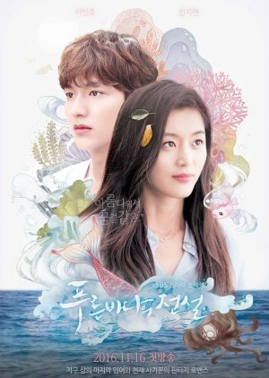
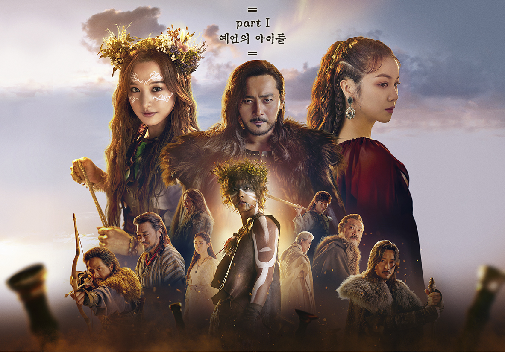

Hobby 2
Hobby 3
KOREAN DRAMAS
When boredom strikes or when I'm having my free time, watching K-drama is my way of unwinding.
With various genre, it's just worthy to watch more and more and more of K-dramas!
It is fascinating to the point that each time I am watching, I wanted to finish it until dawn but that's bad.
So, the moment that I wake up, I will continue where I stopped and be immerse again with the flow of the drama.
Legend of the Blue Sea (2016)

This Korean drama is my number 1 and favorite of all the dramas that I've watched.
My favorite genre is comedy and it's one of the reasons why I watched it.
Another thing is, just by reading the synopsis before watching, I was kind of intrigued; it catched my attention so much that I instantly go for it!
It is nice, beautiful, unique, cool, and just mind-blowing!
I can't stop laughing when a certain scenario is uncontrollably epic!
Link
Arthdal Chronicles (2019)

At first, I was hesitant to watch this drama since it's not my usual genre.
I thought that it was boring because of the fact that the drama's setting is ancient or historical. Plus, the synopsis or the description of the drama is quite confusing.
But when I started watching it, I was like, "wow, what a good start!" I want more of this drama.
It was just so intense that I was a bit mad since there is a season 2 of it and the last season was a cliffhanger.
The sceneries just took my breath away.
The casts are so amazing in acting. The plot is beyond the level and the twists are just so nerve-wracking!
All in all, this drama is 10000000/10! Absolutely perfect!
Link
Chicago Typewriter (2017)

Chicago Typewriter is considered as an "underrated drama" Maybe because it was not that popular until now.
But for me, it is one of the most outstanding drama ever! I haven't watched something like this before.
The past is connected in the present which makes it quite unique.
It is seperately have its own flow of story but seeking for a single purpose or reason.
It's just sad that I only discovered this drama this year but well, it was mesmerizing.
This is a must-watch drama!
Link
Vincenzo (2021)

When the second semester ends last year, this was the first drama that I've watched for the past months.
I saw it in facebook and users were hyped with it. That's why I watched it that instant.
The first part of the movie was cool and tragic but when I was in the middle part of it, it was even cooler and more intense!
It is an action and comedy drama that's why I like it so much.
Moreover, the actors are wonderful. The plot twist is a hundred percent!
I wish there will be a season 2 of this...
Link